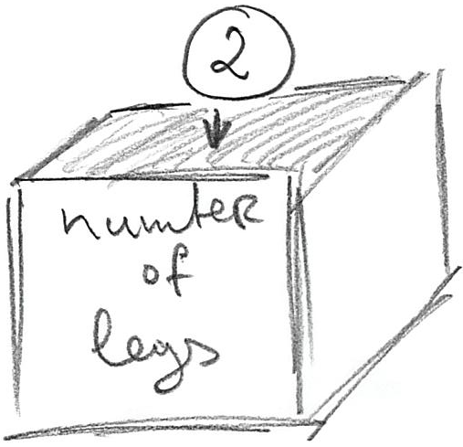

Seminar 1 Python basics
Before we start, create a folder called python-for-experiments (or with some other more suitable but meaningful name) in you user folder (this is where Anaconda’s Jupyter Notebook expects to find them). Download the exercise notebook and put it in this folder. Open Jupyter Notebook (see Getting Started, if you forgot how you do that), navigate to the folder you created and open the downloaded notebook. You will need to switch between explanations here and the exercises in the notebook, so keep them both open.
1.1 Variables
The first fundamental concept that we need to be acquainted with is variable. Variables are used to store information and you can think of it as a box with a name tag, so that you can put something into it. The name tag on that box is the name of the variable and its value what you store in it. For example, we can create a variable that stores the number of legs a game character has. We begin with a number typical for a human being.

In Python, you would write
number_of_legs = 2The assignment statement above has very simple structure <variable-name> = <value>. Variable name (name tag on the box) should be meaningful, it can start with letters or _ and can contain letters, numbers, and _ symbol but not spaces, tabs, special characters, etc. Python recommends (well, actually, insists) that you use snake_case (all lower-case, underscore for spaces) to format your variable names. The <value> on the right side is a more complex story, as it can be hard-coded (as in example above), computed using other variables or the same variable, returned by a function, etc.
Using variables means that you can concentrate what corresponding values mean rather than worrying about what these values are. For example, the next time you need to compute something based on number of character’s legs (e.g., how many pairs of shoes does a character need), you can compute it based on current value of number_of_legs variable rather than assume that it is 1.
# BAD: why 1? Is it because the character has two legs or
# because we issue one pair of shoes per character irrespective of
# their actual number of legs?
pairs_of_shoes = 1
# BETTER!
pairs_of_shoes = number_of_legs / 2Variables also give you flexibility. Their values can change during the program run: player’s score is increasing, number of lives decreasing, number of spells it can cast grows or falls depending on their use, etc. Yet, you can always use the value in the variable to perform necessary computations. For example, here is a slightly extended number_of_shoes example.
number_of_legs = 2
# ...
# something happens and our character is turned into an octopus
number_of_legs = 8
# ...
# the same code still works and we still can compute the correct number of pairs of shoes
pairs_of_shoes = number_of_legs / 2As noted above, you can think about a variable as a labeled box you can store something in. That means that you can always “throw away” the old value and put something new. In case of variables, the “throwing away” part happens automatically, as the new value overwrites the old one. Check yourself, what will be final value of the variable in the code below?
number_of_legs = 2
number_of_legs = 5
number_of_legs = 1
number_of_legsDo exercise #1.
As you have already seen, you can compute a value instead of specifying it. What would be the answer here?
number_of_legs = 2 * 2
number_of_legs = 7 - 2
number_of_legsDo exercise #2.
1.2 Assignments are not equations!
Very important: although assignments look like mathematical equations, they are not equations! Assignments follow a very important rule that you must keep in mind when understanding assignments: the right side expression is evaluated first until the final value is computed, then and only then the final value is assigned to the variable specified on the left side (put in the box). What this means is that you can use the same variable on both sides! Let’s take a look at this code:
x = 2
y = 5
x = x + y - 4What happens when computer evaluates the last line?
x = x + y - 4First, it takes current values of all variables (2 for x and 5 for y) and substitutes them into the expression. After that internal step, the expression looks like
x = 2 + 5 - 4Then, it computes the expression on the right side and, once the computation is completed, stores that new value in x
x = 3Do exercise #3 to make sure you understand this.
1.3 Constants
Although the real power of variables is that you can change their value, you should use them even if the value remains constant. There are no true constants in Python, rather an agreement that their names should be all UPPER_CASE. Accordingly, when you see SUCH_A_VARIABLE you know that you should not change its value. Technically, this is just a recommendation, as no one can stop you from modifying value of a CONSTANT. However, much of Python’s ease-of-use comes from such “gentlemen’s agreements” (such as snake_case convention above), which you should respect. We will encounter more of them when learning about objects.
Taking all this into account, if number of legs stays constant throughout the game, you should highlight that constancy and write
NUMBER_OF_LEGS = 2I strongly recommend using constants and avoid hardcoding the values. First, if you have several identical values that mean different things (2 legs, 2 eyes, 2 ears, 2 vehicles per character, etc.), seeing a 2 in the code will not tell you what does this 2 mean (the legs? the ears? the score multiplier?). You can, of course, figure it out based on the code that uses this number but you could spare yourself that extra effort and use a constant instead. Then, you just read its name and the meaning of the value becomes apparent (and it is the meaning not the actual value that you are mostly interested in). Second, if you decide to change that value (say, our main character is now a tripod), when using a constant means you have only one place to worry about, the rest of the code stays as is. If you hard-coded that number, you are in for an exciting (not really) but definitely long search-and-replace throughout the entire code.
Do exercise #4.
1.4 Value types
So far, we only used integer numeric values (1, 2, 5, 1000…). Although, Python supports many different value types, at first we will concentrate on a small subset of them:
- integer numbers, we already used, e.g.
-1,100000,42. - float numbers that can take any real value, e.g.
42.0,3.14159265359,2.71828. - strings that can store text. The text is enclosed between either paired quotes
"some text"or apostrophes'some text'. This means that you can use quotes or apostrophes inside the string, as long as its is enclosed by the alternative. E.g.,"students' homework"(enclosed in", apostrophe'inside) or'"All generalizations are false, including this one." Mark Twain'(quotation enclosed by apostrophes). There is much much more to strings and we will cover that material throughout the course. - logical / Boolean values that are either
TrueorFalse.
When using a variable it is important that you know what type of value it stores and this is mostly on you. Python will raise an error, if you try doing a computation using incompatible. In some cases, Python will automatically convert values between certain types, e.g. any integer value is also a real value, so conversion from 1 to 1.0 is mostly trivial and automatic. However, in other cases you may need to use explicit conversion. Go to exercise #5 and try guessing which code will run and which will throw an error due to incompatible types?
5 + 2.0
'5' + 2
'5' + '2'
'5' + True
5 + TrueDo exercise #5.
Surprised by the last one? This is because internally, True is also 1 and False is 0!
You can explicitly convert from one type to another using special functions. For example, to turn a number or a logical value into a string, you simply write str(<value>). In examples below, what would be the result?
str(10 / 2)
str(2.5 + True)
str(True)Do exercise #6.
Similarly, you can convert to a logical/Boolean variable using bool(<value>) function. The rules are simple, for numeric values 0 is False, any other non-zero value is converted to True. For string, an empty string '' is evaluated to False and non-empty string is converted to True. What would be the output in the examples below?
bool(-10)
bool(0.0)
secret_message = ''
bool(secret_message)
bool('False')Do exercise #7.
Converting to integer or float numbers is trickier. The simplest case is from logical to integer/float, as True gives you int(True) is 1 and float(True) is 1.0 and False gives you 0/0.0. When converting from float to integer, Python simply drops the fractional part (not rounding!). When converting a string, it must be a valid number of the corresponding type or the error is generated. E.g., you can convert a string like "123" to and integer or a float but this won’t work for "a123". Moreover, you can convert "123.4" to floating-point number but not to an integer, as it has fractional part in it. Given all this, which cells would work and what output would they produce?
float(False)
int(-3.3)
float("67.8")
int("123+3")Do exercise #8.
1.5 Printing output
To print the value, you need you use print() function (we will talk about functions in general later). In the simplest case, you pass the value and it will be printed out.
print(5)## 5or
print("five")## fiveOf course, you already know about the variables, so rather than putting a value directly, you can pass a variable instead and its value will be printed out.
number_of_pancakes = 10
print(number_of_pancakes)## 10or
breakfast = "pancakes"
print(breakfast)## pancakesYou can also pass more than one value/variable to the print function and all the values will be printed one after another. For example, if we want to tell the user what did I had for breakfast and just how many of those, we can do
breakfast = "pancakes"
number_of_items = 10
print(breakfast, number_of_items)## pancakes 10What will be printed by the code below?
dinner = "stake"
count = 4
desert = "cupcakes"
print(count, dinner, count, desert)Do exercise #9.
However, you probably would want to be more explicit, when you print out the information. For example, imagine you have these three variables:
meal = "breakfast"
dish = "pancakes"
count = 10You could, of course do print(meal, dish, count) but it would be nicer to print “I had 10 pancakes for breakfast”, where items in bold would be the inserted variables’ values. For this, we need to use string formatting. Please note that the string formatting is not specific to printing, you can create a new string value via formatting and store it in a variable (without printing it out) or print it out (without storing it).
1.6 String formatting
A great resource on string formatting in Python is pyformat.info. As Python constantly evolves, it now has more than one way to format strings. Below, I will introduce the “old” format that is based on classic string formatting used in sprintf function is C, Matlab, R, and many other programming languages. It is somewhat less flexible than a newer ones but for simple tasks the difference is negligible. Knowing the old format is useful because of its generality. If you want to learn alternatives, read at the link above.
The general call is "a string with formatting"%(tuple of values to be used during formatting).
In "a string with formatting", you specify where you want to put the value via % symbol that is followed by an optional formatting info and the required symbol that defines the type of the value. The type symbols are
sfor stringdfor an integerffor a float valuegfor an “optimally” printed float value, so that scientific notation is used for large values (e.g.,10e5instead of100000).
Here is an example of formatting a string using an integer:
print("I had %d pancakes for breakfast"%(10))## I had 10 pancakes for breakfastYou are not limited to a single value that you can put into a string. You can specify more locations via % but you must make sure that you pass the right number of values. Before running it, can you figure out which call will actually work (and what will be the output ) and which will produce an error?
print('I had %d pancakes and either %d or %d stakes for dinner'%(2))
print('I had %d pancakes and %d stakes for dinner'%(7, 10))
print('I had %d pancakes and %d stakes for dinner'%(1, 7, 10))Do exercise #10.
In case of real values you have two options: %f and %g. The latter uses scientific notation (e.g. 1e10 for 10000000000) to make a representation more compact.
Do exercise #11 to get a better feeling for the difference.
These is much more to formatting and you can read about it at pyformat.info. However, these basics are sufficient for us to start programming our first game during the next seminar. Don’t forget to submit your exercise notebook and see you next time!